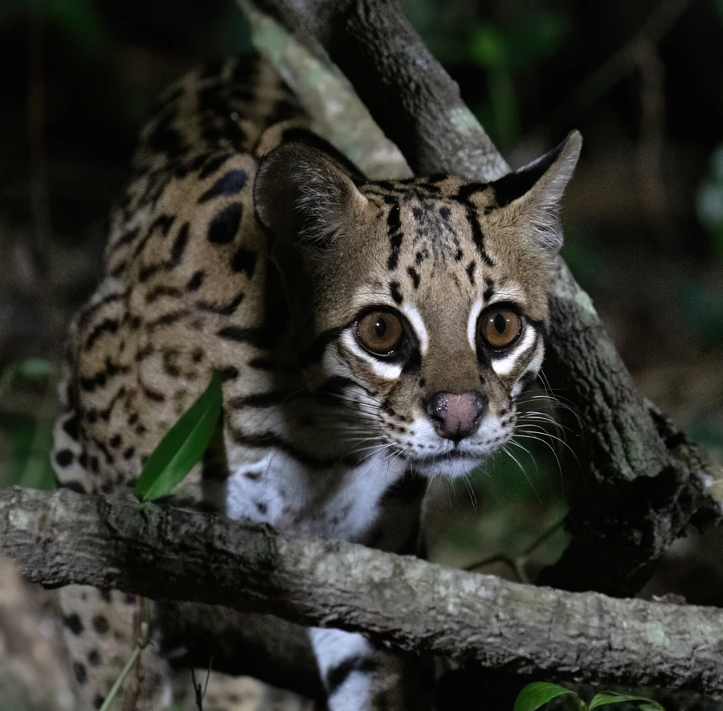

哺乳动物 · 动物界
虎猫 Leopardus pardalis

美洲热带森林中的中型猫科，毛色橙黄布满黑色环纹，善攀爬和游泳，多为夜行独居，是美洲常见的小型豹类。
- 分类
- 门脊索动物门纲哺乳纲目食肉目科猫科属虎猫属
- 栖息环境
- 热带森林、灌丛与红树林，偏好靠近水源的密林
- 地理分布
- 美国南部、中美洲和南美洲，从墨西哥到阿根廷北部
- 保护级别
- IUCN 无危（LC）
物种志
虎猫体长 0.65–1.0 米，尾长 0.3–0.45 米，体重 8–16 kg，雌雄差异不大。它的被毛为橙黄至浅褐色，全身布满黑色环纹和斑点，头面部有黑色条纹，耳背黑色带白斑；四肢粗壮，爪可伸缩，尾巴较长。
虎猫分布于美国南部、中美洲和南美洲的热带森林、灌丛和红树林，栖息于靠近水源的密林。它多在夜间单独活动，善攀爬和游泳，捕食鼠类、野兔、鸟类、爬行动物、鱼类和中小型有蹄类，也会上树捕食猴类；领地以尿液和抓痕标记。雌性妊娠期约 80 天，每胎 1–3 仔。虎猫适应力较强，在部分地区数量稳定，但因毛皮贸易和栖息地丧失，局部种群有所下降，全球被列为无危。
形态与习性
- 食性鼠类、野兔、鸟类、爬行动物、鱼类与中小型兽类
- 体长0.65–1.0 m，尾长 0.3–0.45 m
- 体重8–16 kg
- 寿命野外约 10–15 年
- 繁殖妊娠期约 80 天，每胎 1–3 仔
- 活动节律夜间单独活动
- 本领善攀爬和游泳，也能上树捕食猴类
趣味知识
- 虎猫的毛色橙黄，全身布满黑色环纹，形似小型豹子。
- 它善攀爬和游泳，也能上树捕食猴类。
- 虎猫多在夜间单独活动，靠尿液和抓痕标记领地。
- 虎猫的分布从美国南部一直延伸到阿根廷北部。